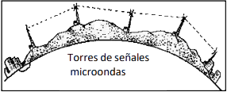

Sin continuidad fisica
Microondas:La transmisión por microondas necesita de estaciones de transmisión que envían los datos a través del aire en forma de señales electromagnéticas. La transmisión de datos vía señales de radio por microondas es de línea de visión: es necesario que exista contacto visual entre un punto y otro de la transmisión. La distancia máxima es de 40 Km., por eso es necesario tener antenas repetidoras. Hasta 11 Mbps, dependiendo de las frecuencias.

Satélites:Permiten la transmisión de datos a largas distancias
utilizando microondas. Utiliza para esto satélites geoestacionarios
como antenas repetidoras. Los datos se envían posteriormente a
través de microondas. En esencia, un satélite es una estación
repetidora. La ventaja principal de los satélites consiste en que
los datos se pueden transmitir desde un sitio a cualquier número
de lugares en cualquier parte del planeta. Una ventaja es que
en el costo de la transmisión no se considera la distancia, como
sucede con los otros métodos. Llega la conexión hasta 140 Mbps.
Wi-Fi:es en realidad el nombre comercial de un
determinado tipo de
tecnología inalámbrica.
Esta tecnología se
utiliza con mayor fre-
cuencia en el hogar y la
oficina, en redes, video
juegos, y teléfonos mó-
viles. Es un sistema de
envío de datos que
utiliza ondas de radio en lugar de cables, que es adecuado
para distancia relativamente cortas ( luego de los 100 m falla ). Con
velocidad de hasta 44 Mbps para 2,4 GHz de ancho de banda.
Bluetooth:Es un medio de transmisión de corto
alcance que cubre un
área de hasta unos 30
metros y permite conectar
hasta 8 dispositivos. Se
usa para redes hogareñas
que conectan distintos
componentes ( PC, elec-
trodomésticos, celulares,
etc, ) . Transfiere hasta 24
Mbps solo el 3.0.
VOLVER A LOS CONTENIDOS